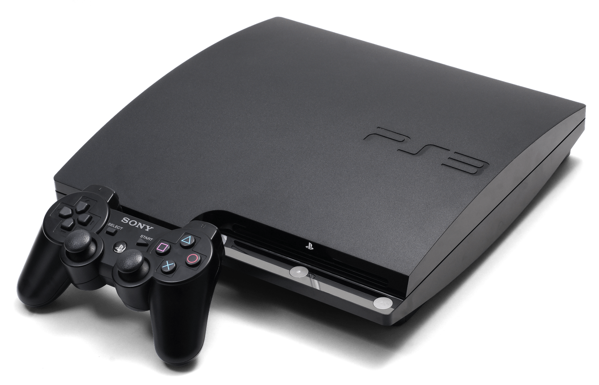

|
Playstation: The first PlayStation console, also known as the PS1 or PSX, was released by Sony in December 1994 in Japan and September 1995 in North America. It was Sony's first entry into the video game console market and was a 32-bit system that used CD-ROMs for game storage. The PS1 was a significant milestone in the evolution of gaming as it was one of the first consoles to incorporate 3D graphics and was capable of displaying full-motion video. The console featured many classic games, including Final Fantasy VII, Gran Turismo, Metal Gear Solid, and Resident Evil, which helped establish the PlayStation brand as a major player in the video game industry. Despite being succeeded by newer consoles, the PS1 remains a beloved piece of gaming history and a favorite among collectors and gamers. |
 |
Playstation 2: PlayStation 2 (PS2) is a home video game console developed and produced by Sony Computer Entertainment. It was first released in 2000 and is the successor to the original PlayStation console. The PS2 was one of the most popular video game consoles of its time, selling over 155 million units worldwide. It had a wide variety of games available, ranging from sports games to role-playing games, and was also known for its backwards compatibility with the original PlayStation games. The PS2 was also notable for being one of the first consoles to support DVD playback, making it a popular entertainment device in addition to a gaming console. |
|  | Playstation 3: The PlayStation 3 (PS3) is a home video game console developed and produced by Sony Computer Entertainment. It was first released in 2006 and is the successor to the PlayStation 2 console. The PS3 was known for its powerful hardware, featuring a custom-built Cell processor and a high-capacity Blu-ray disc drive. It also introduced online gaming through the PlayStation Network, which allowed players to connect with other gamers around the world. The PS3 had a vast library of games, including popular exclusives such as the Uncharted and God of War series. Despite initial high pricing, the PS3 went on to sell over 87 million units worldwide. |
 |
Playstation 4: The PlayStation 4 (PS4) is a video game console developed and manufactured by Sony Interactive Entertainment. It was first released in 2013 as a successor to the PlayStation 3. The console features an AMD "Jaguar" processor, 8GB of GDDR5 memory, and a 500GB or 1TB hard drive for storage. The PS4 offers a wide range of games, including popular titles like "Uncharted 4," "God of War," and "The Last of Us Part II." It also supports online gaming and streaming services like Netflix, Hulu, and Amazon Prime Video. |
 |
Playstation 5: The PlayStation 5 (PS5) is the latest video game console developed and manufactured by Sony Interactive Entertainment, released in 2020. The console features an AMD Zen 2 processor and RDNA 2 graphics card, offering stunning visuals and fast loading times. It comes with an ultra-high-speed SSD for storage and supports up to 8K resolution and 120fps gameplay. The PS5 also features a new DualSense controller with haptic feedback and adaptive triggers for a more immersive gaming experience. The console offers a wide range of games, including exclusive titles like "Demon's Souls," "Spider-Man: Miles Morales," and "Ratchet & Clank: Rift Apart," and supports backward compatibility with most PS4 games. |
 |
Playstation Studios:PlayStation Studios is a division of Sony Interactive Entertainment responsible for developing and publishing video games exclusively for PlayStation consoles. The division was established in 2020 to bring together the first-party studios under one brand. PlayStation Studios encompasses 14 studios worldwide, including Naughty Dog, Insomniac Games, Sucker Punch Productions, and Guerrilla Games. The studios produce a range of critically acclaimed and commercially successful games, including "The Last of Us Part II," "Spider-Man," and "Horizon Zero Dawn." PlayStation Studios also works with third-party developers to produce exclusive content for PlayStation consoles. The division's branding appears on all first-party games developed by the studios, emphasizing the exclusivity of the PlayStation console ecosystem. |